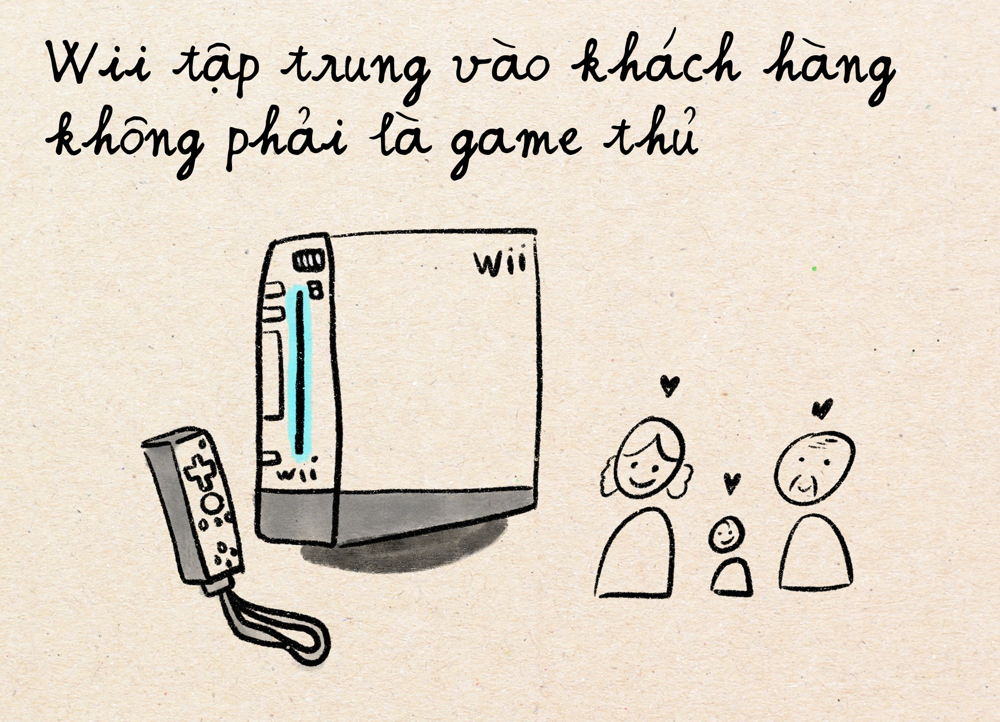
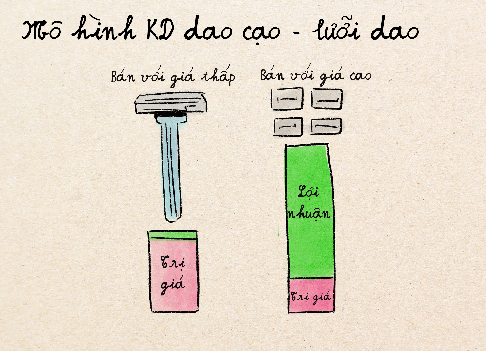
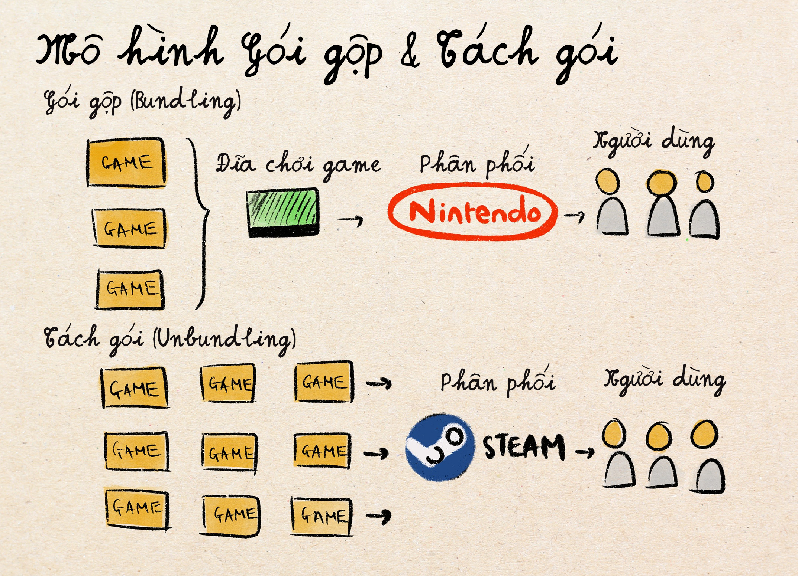
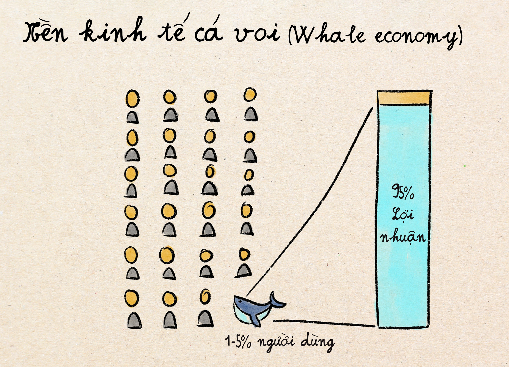
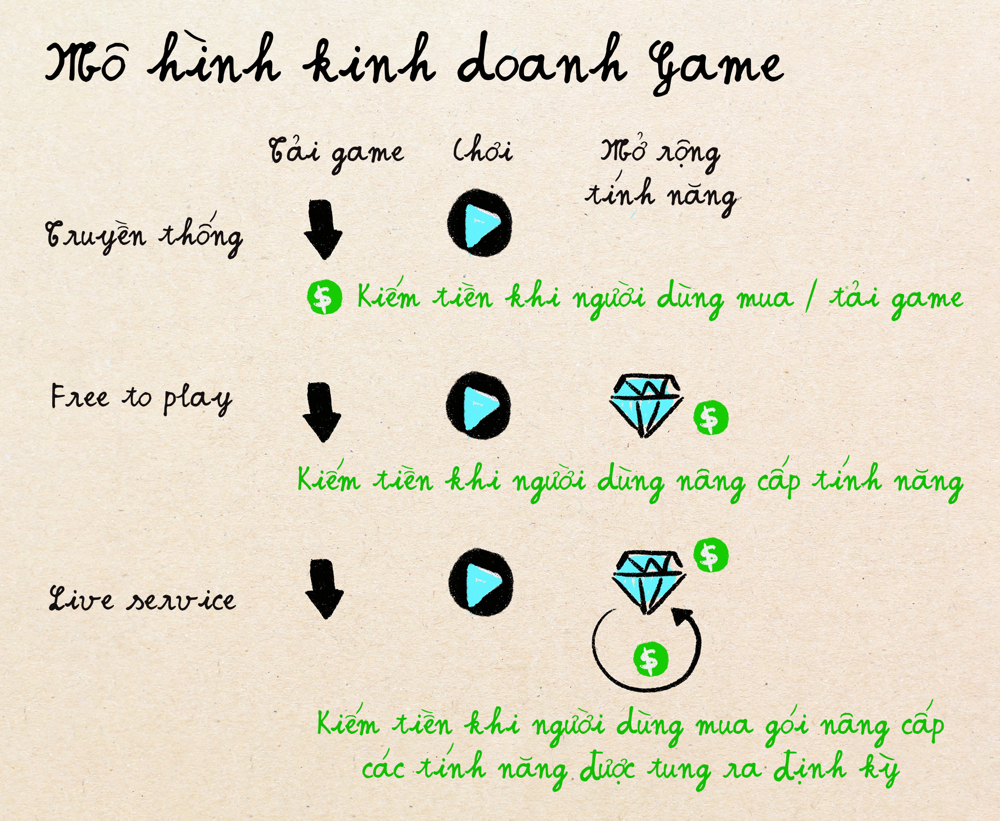
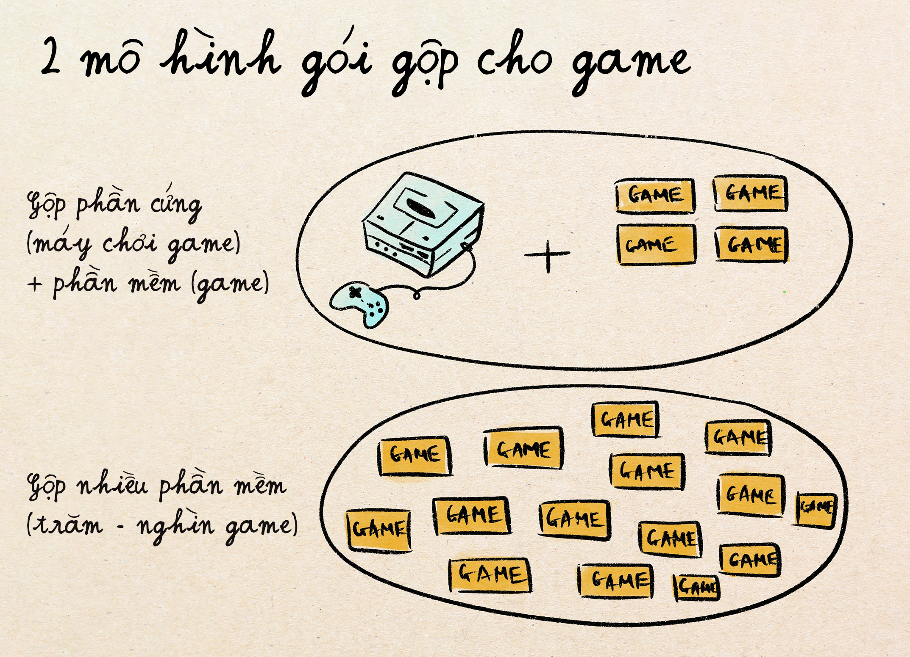
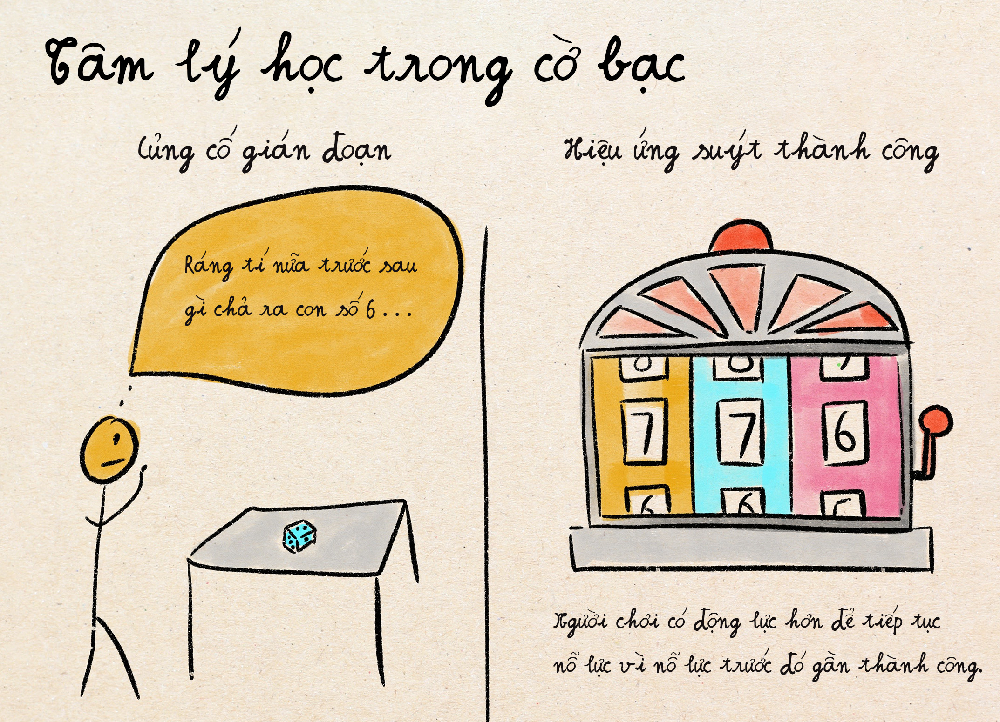
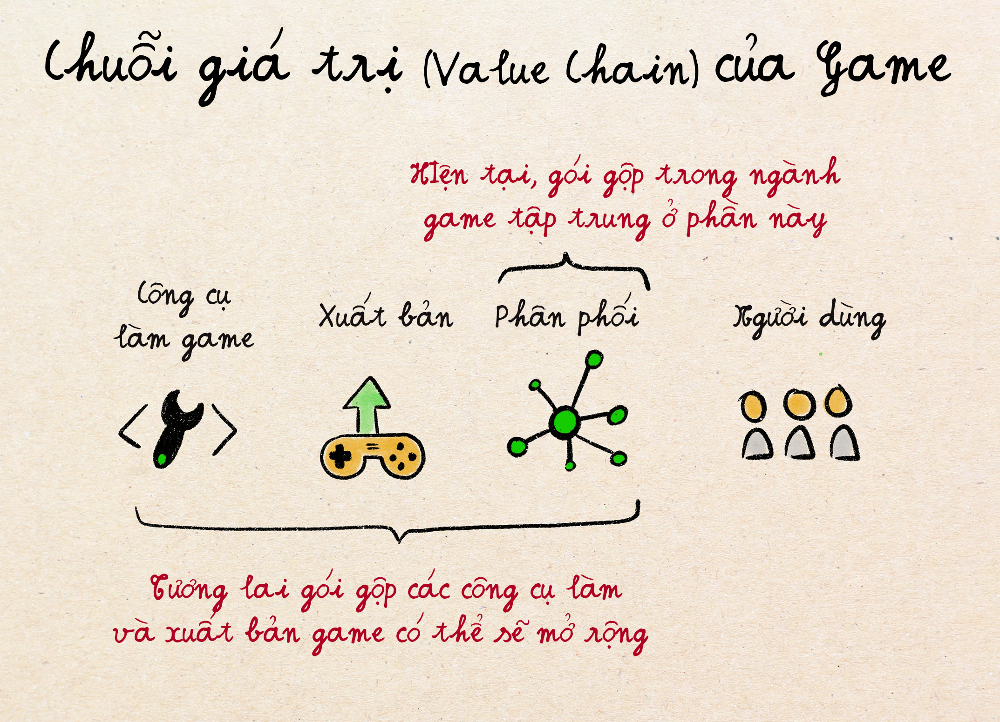

Phân tích chiến lược kinh doanh của các công ty trò chơi điện tử
Định nghĩa: Bundling là hình thức bán nhiều sản phẩm / dịch vụ trong một gói với giá ưu đãi hơn so với mua riêng lẻ từng món.
Nếu ai sinh ra những năm 80, 90s như mình thì chắc cũng nhớ máy trò chơi điện tử Nintendo gắn liền với tuổi thơ. Đây là sản phẩm bắt đầu của ngành trò chơi điện tử (game). Từ cái máy đơn giản này, ngành công nghiệp game đã trải qua nhiều xu hướng chiến lược từ gộp game (bundling games) đến tách gói game (unbundling) tới những chiến lược hoàn toàn tập trung vào kiếm tiền không phải từ bán game hay máy chơi game, mà từ khách hàng mua đồ trong game. Cùng phân tích sự khác biệt của các mô hình kinh doanh này nhé!

Nintendo và gói sản phẩm phần cứng (máy chơi game) + phần mềm (game)
Ngành game bắt đầu với một mô hình gói gộp đơn giản này với Nintendo là tiên phong, sau đó nối tiếp là PlayStation của Sony và Xbox của Microsoft. Cách kiếm tiền từ gói sản phẩm này khá đơn giản: bán phần cứng là thiết bị chơi game, thường với tỷ suất lợi nhuận thấp hoặc lỗ, và kiếm lời từ bán phần game. Một khi người dùng đã mua phần cứng rồi thì họ sẽ bị "khoá" vào hệ sinh thái và liên tục mua thêm game để chơi được với phần cứng đó. Khi các công ty phát triển game muốn bán trò chơi cho các máy chơi của Nintendo chẳng hạn, Nintendo sẽ thu được 30% lợi nhuận. Còn nếu ai muốn chơi các game độc quyền của Nintendo như Mario, thì dĩ nhiên Nintendo lấy được 100% lợi nhuận.
Hàng chục năm từ lúc bắt đầu, Nintendo vẫn trung thành với mô hình bán gói sản phẩm phần cứng + phần mềm này, và tập trung vào chiến lược xây dựng game độc quyền riêng như Zelda, Pokemon, Mario, v.v. Trong khi đó, Sony và Microsoft đến sau cuộc chơi, lại tập trung vào việc mua lại các công ty phát triển game khác cho phần cứng của riêng họ (máy chơi Playstation và Xbox) thay vì phát triển game riêng.
Sự lựa chọn giữa việc Xây dựng (Build), Mua (Buy), hoặc Hợp tác xây dựng sản phẩm (Partner) là một lựa chọn chiến lược khá quan trọng trong kinh doanh cho nhiều ngành chứ không riêng gì game.
- Build (Xây dựng) là lựa chọn tốt nếu công ty bạn có nhiều chuyên gia có khả năng xây dựng sản phẩm chất lượng cao, và bạn thường là công ty đi trước với nhiều thời gian hơn để phát triển sản phẩm. Chiến lược này có tính rủi ro cao hơn vì sản phẩm có thể sẽ không thành công mà công ty phải mất cả thời gian lẫn tiền bạc đầu tư vào nó.
- Buy (Mua lại sản phẩm / công ty khác) là lựa chọn tốt nếu như công ty bạn không có thời gian để phát triển (như khi công ty bạn là người đến sau và phải chạy theo thị trường chẳng hạn) và tất nhiên, là có tiền để mua.
- Partner (Hợp tác xây dựng) là lựa chọn khi bạn không rõ là loại sản phẩm nào sẽ thành công, và cũng không có đủ chuyên gia để nghiên cứu xây dựng sản phẩm đó.
Nintendo đứng vững mặc dù công nghệ cổ lổ sĩ
Khi Playstation và Xbox nhảy vào thị trường vào đầu những năm 2000, Nintendo mất đi doanh thu khá lớn, đặc biệt là ở thị trường Mỹ. Playstation và Xbox tập trung vào phát triển phần cứng với công nghệ mới nhất: đồ hoạ tiên tiến, sức mạnh xử lý cao hơn, v.v. Thế nhưng thay vì chạy đua để cạnh tranh về mặt công nghệ phần cứng, Nintendo vạch ra một hướng đi hoàn toàn khác: họ vẫn tập trung vào người dùng không phải là game thủ chuyên nghiệp mà là những người chơi game với bạn bè gia đình, và tạo ra phần cứng phục vụ cho người dùng mục tiêu này.
Nintendo ra mắt Wii vào năm 2006 với hệ thống điều khiển thân thiện với gia đình, từ trẻ nhỏ đến người già với các trò chơi vui và dễ tiếp cận với người ít chơi game, như bowling, tennis, v.v. Wii bán được hơn 101 triệu máy, vượt qua cả PlayStation 3 và Xbox 360, và chứng minh rằng đổi mới trong lối chơi và mở rộng thị trường cho các game thủ phi truyền thống có thể sinh lời hơn việc chỉ đơn giản xây dựng cỗ máy mạnh nhất. Nintendo từ chối chơi theo luật của đối thủ và tiếp tục tìm kiếm "đại dương xanh" có ít đối thủ cạnh tranh hơn.
Nhờ có phần cứng (máy chơi game) với công nghệ cũ và rẻ tiền hơn, kết hợp với ý tưởng máy độc đáo mới mẻ, máy của Nintendo kiếm được lợi nhuận cao ngay từ đầu. Trong khi đó, Playstation và Xbox với giá linh kiện cao và mục tiêu kéo nhiều khách hàng vào hệ sinh thái ngay trước mắt, phải bán máy chơi với giá thấp hơn, thậm chí là lỗ từ $50-$100 / máy. Mô hình doanh thu mà Playstation và Xbox chạy theo được gọi là "lưỡi dao cạo" (Razor-Blade model), là chiến thuật kinh doanh "bán rẻ phần chính, hốt tiền từ phụ kiện". Nó giống như công ty bán cán dao cạo râu rất rẻ (thậm chí lỗ tiền!) để bạn mua, nhưng sau đó bạn phải mua lưỡi dao thay thế đắt đỏ của họ suốt đời—đó mới là cách họ kiếm bộn tiền! Trong thị trường game, PlayStation và Xbox bán máy lỗ máy để thu hút người chơi, rồi kiếm lại từ việc hốt 30% tiền mỗi game bạn mua trên nền tảng của họ.
Mô hình tách gói (unbundling) và sự ra đời của nền tảng game (Game platforms)
Vào thời điểm Wii phát hành trên thị trường, Steam cũng bắt đầu trở thành nền tảng bán game đứng đầu. Với nền tảng này, người dùng không cần phải mua các đĩa game để chơi được với các phần cứng / thiết bị game riêng biệt nữa. Họ có thể mua game online và chơi trên bất kỳ máy vi tính nào. Điều này cũng có nghĩa là người dùng không bị "khoá" vào các gói sản phẩm "phần cứng + phần mềm) mà Nintendo, Playstation, hay là Xbox bán ra.
Trước khi xu hướng này xảy ra, nếu công ty nào có danh mục các game tốt thì người dùng sẽ mua phần cứng (máy chơi) của họ. Nhưng khi phần cứng không còn là giới hạn, cạnh tranh trên thị trường tập trung hầu hết vào chất lượng của từng game. Đây được gọi là mô hình "tách gói" (unbundling), khi giá trị mà công ty bạn đưa đến người dùng không còn dựa vào "đóng gói của nhiều sản phẩm cùng lúc" mà phải dựa vào từng sản phẩm riêng lẻ.
Với cạnh tranh cao khi số lượng game trên Steam cực lớn, các game phải liên tục tìm cách níu chân khách hàng để họ tiếp tục chơi và trả tiền. Vì thế, "thời gian và sự chú ý" của người dùng mới là tài nguyên khan hiếm nhất – khác hẳn so với khi người dùng "mua đĩa game" và chơi với phần cứng đã mua: một khi mua rồi thì người dùng sẽ thường quay lại chơi tiếp mà không cần phải có nội dung / tinh năng mới liên tục cập nhật cho trò chơi đó. Công ty sản xuất game vì thế phải "nâng cao" độ hấp dẫn của game; hai mô hình doanh thu mới trong thị trường game được phát triển mạnh hơn bao gồm:
Miễn phí chơi (Free-to-play): đây là mô hình chơi miễn phí ban đầu để thu hút người chơi, nhưng nếu bạn muốn mở khoá các tính năng cao cấp, mua hàng trong game, hoặc chơi level cao hơn, bạn phải bắt đầu trả tiền. Ví dụ điển hình là Fortnite và League of Legends. Mô hình này được thúc đẩy bởi "nền kinh tế cá voi" (whale economy) – là khi 1-5% người chơi tạo ra phần lớn doanh thu trong khi đó hơn 95% người chơi không muốn trả tiền cho bất cứ cái gì trong game cả. Một ví dụ từ dữ liệu trò chơi Clash of Clans cho thấy 50% doanh thu của game này đến từ chỉ 0.15% người chơi.
Bằng mô hình chơi miễn phí, các công ty phát triểm game loại bỏ rào cản chơi ban đầu và thu hút hàng triệu người chơi, sau đó kiếm tiền từ top những người chơi nhiều nhất. Tương tự so với ngành game, trong các ngành khác, mô hình "Freemium" cũng tuân theo cùng một nguyên tắc cốt lõi: Xóa bỏ rào cản gia nhập (miễn phí), sau đó kiếm tiền từ người dùng tích cực nhất.
Game dịch vụ trực tiếp (Live service games) là những trò chơi điện tử được cập nhật liên tục với nội dung, tính năng và sự kiện mới để giữ chân người chơi trong thời gian dài thay vì chỉ mua một lần rồi thôi. Nó áp dụng mô hình giống SaaS (Software as a service) từ các ngành khác và đòi hỏi người chơi phải trả tiền thường xuyên cho các cập nhật định kỳ. Ví dụ điển hình: Genshin Impact, Fortnite, và World of Warcraft.
Quay lại Nintendo, mình muốn nhấn mạnh lại lần nữa các lý do vì sao họ vẫn trụ lại được với mô hình bundling khi xu hướng "unbundling" tiếp tục phát triển:
- Nintendo từ chối cạnh tranh trực tiếp với game trên máy tính PC, và tập trung vào trải nghiệm phần cứng đổi mới (theo dõi chuyển động với Wii, máy chơi game di động Switch).
- Trong khi Steam cung cấp sự lựa chọn game không giới hạn và đồ họa tiên tiến, Nintendo tập trung vào các game độc quyền mà bạn không thể có được ở nơi nào khác (Mario, Zelda, Pokémon)
- Họ nhắm đến một đối tượng hoàn toàn khác—gia đình, trẻ em, v.v. —thay vì vào các game thủ chơi nhiều và chuyên nghiệp
Sự khác biệt trong chiến lược của Nintendo với trải nghiệm game độc quyền khác biệt chứng minh rằng việc chạy theo xu hướng thị trường không phải là chiến lược duy nhất.
Mô hình kinh doanh "Gói Gộp" mới xuất hiện
Năm 2017, Microsoft cho ra đời một "gói" dịch vụ mới: Game Pass – nó giống như là "Netflix cho game" vậy - bạn trả tiền đăng ký hàng tháng để có thể chơi tất cả các game trong thư viện game online của họ. Đây cũng là mô hình "gói gộp" nhưng thay vì kết hợp phần cứng và phần mềm, họ gộp các game (phần mềm) lại thành một subscription (sản phẩm đăng ký hàng tháng). Và tiếp tục theo chiến lược họ dùng cho Xbox, Microsoft chi hơn 75 tỷ đô la mua lại các nhà phát hành game (Bethesda, Activision Blizzard) để lấp đầy thư viện danh mục game của họ.
Năm 2022, Sony cũng cho ra gói subscription tương tự tên là PlayStationPlus. Họ chạy theo mô hình mới này khá chậm (sau 5 năm) vì Sony cũng nhận ra bán các game cực tốt với trải nghiệm đặc trưng (như Nintendo) vẫn là một chiến lược tốt: khách hàng sẵn sàng trả giá cao cho loại trải nghiệm này mặc dù nó khác với thư viện game lớn đại trà với hàng trăm game như của Microsoft.
2 chiến lược khác nhau, hai cách "bundling" / gói gộp khác nhau, và cả 2 đều có thể hoạt động tốt cùng một lúc trong thị trường game hiện đại ngày nay.
Vì sao cách gói gộp kiểu này lại thu hút được khách hàng. Mình dùng một ví dụ đơn gian nhé.
- Khách hàng 1 thích game A và sẵn sàng trả $30. Họ cũng thích game B và sẵn sàng trả $10.
- Khách hàng 2 thích game A và sẵn sàng trả $10. Họ cũng thích game B và sẵn sàng trả $40
Nếu công ty để giá game A và B mỗi game $20 thì khách hàng 1 sẽ chỉ mua game A, còn khách hàng 2 sẽ chỉ trả giá game B. Tổng doanh thu là $40.
Nhưng nếu họ đưa gói gộp giá cả game A và B là $30 thì cả khách hàng A và B sẽ mua gói này, vì nó rẻ hơn tổng giá trị của 2 game mà cả hai khách muốn trả. Tổng doanh thu lúc này sẽ là $60, lớn hơn $40. Đây là cái hay của việc gộp sản phẩm / dịch vụ thành một gói.
Tóm lại, khi phân tích mô hình kinh doanh của các công ty trong thị trường game, một số mảng chính cần nhắc tới bao gồm:
- Người dùng mục tiêu: người chơi game nhiều / chuyên nghiệp hay người chơi xã giao với gia đình, bạn bè.
- Mô hình doanh thu:
- Gói gộp phần cứng / phần mềm
- Free-to-play và dịch vụ trực tiếp (Live service games)
- Gói gộp game với dịch vụ đăng ký hàng tháng (subscription)
- Chiến lược tạo nội dung / game: Tự xây dựng game (Nintendo), Mua các game lớn (Sony), Tạo ra các thư viện game nhỏ nhưng khổng lồ (Microsoft)
Cách mô hình Free to play sử dụng tâm lý người dùng để kiếm tiền
Trong phần này, mình muốn phân tích sâu hơn một tí về cách mà mô hình doanh thu mới hơn trong thế giới game, Free to play, sử dụng tâm lý học để kiếm tiền và biến game thành một "nền kinh tế" như ngoài đời thực.
Một số game như Fortnite có hệ thống buôn bán hàng ảo trong game với doanh thu tới 5,1 tỷ đô vào năm 2020, hơn cả GDP ở một số quốc gia nhỏ như Belize. Những game này đã phát hiện ra rằng các vật phẩm ảo trong game có thể có giá thực tế ngang với hàng xa xỉ. Nhưng không phải vì chức năng của chúng, mà vì chúng "ra tín hiệu địa vị" (tiếng anh là Signaling Social Status) với người chơi khác. Trong số hàng trăm nghìn người chơi miễn phí, trang phục, trang trí nhân vật, cũng như các vật phẩm cao cấp đắt tiền hơn thể hiện sự giàu có, gu thẩm mỹ, và sự cam kết trung thành vào trò chơi. Game vốn vẫn là một không gian xã hội, mà con người thì luôn khao khát được công nhận trong xã hội họ tham gia vào. Nó cũng là lý do vì sao nhiều người thích mua hàng xa xỉ trong thế giới thật chỉ để "khoe" địa vị với mọi người xung quanh.
Tuy nhiên, cơ chế kiếm tiền tiếp theo mới là mặt tối của nền kinh tế trong các game Free to play: hệ thống Gacha. Gacha là thuật ngữ tiếng Nhật dùng để chỉ một cơ chế trò chơi khi người chơi phải tiêu tiền để nhận ngẫu nhiên các vật phẩm / hàng hoá / nhân vật trong trò chơi (thay vì trả tiền để mua trực tiếp vật mà họ muốn). Đằng sau cơ chế này là chiêu khai thác yếu tố tâm lý giống như trong sòng bài đánh bạc: sự không nhất quán trong thời gian chờ sự kiện bốc thăm ngẫu nhiên này (củng cố gián đoạn, tiếng anh là Intermittent Reinforcement), trải nghiệm "suýt trúng cái bạn muốn", và hy vọng "lần tới sẽ trúng" (tiếng anh là Near miss effect) khiến người dùng nghiện và không ngừng trả tiền để tiếp tục.
Hai yếu tố tâm lý chính:
1. Củng cố gián đoạn (Intermittent Reinforcement): Là một nguyên tắc tâm lý trong thuyết hành vi, trong đó một hành vi được tưởng thưởng không phải lúc nào cũng nhận được phần thưởng. Thay vì củng cố liên tục (mỗi lần thực hiện đều được thưởng), cách này chỉ cung cấp phần thưởng cho một số lần ngẫu nhiên hoặc không dự đoán trước được. Kỹ thuật này có thể làm cho hành vi trở nên bền bỉ và kiên trì hơn, vì người thực hiện sẽ tiếp tục hành vi với hy vọng nhận được phần thưởng trong tương lai. Tính ngẫu nhiên: Các sự kiện trao thưởng và đánh bạc diễn ra ngẫu nhiên nên người chơi nghĩ rằng họ sẽ thắng lần nữa hoặc tham gia sự kiện lần nữa nếu họ kiên trì.
2. Hiệu ứng suýt thành công (Near miss effect): Đề cập đến trường hợp người chơi có động lực hơn để tiếp tục nỗ lực vì nỗ lực trước đó "gần như đã thành công".
Các game như Genshin Impact đã hoàn thiện mô hình này, tạo ra hàng tỷ đô bằng cách cho người chơi "quay" nhân vật hiếm với tỷ lệ trúng đôi khi dưới 1%. Nhiều quốc gia hiện quy định hoặc cấm các tính năng Gacha đặc biệt khi nhắm đến trẻ vị thành niên, nhưng mô hình vẫn tồn tại vì nó cực kỳ sinh lời. So với thực tế, cách chơi này cũng giống như xu hướng gần đây nhất: hộp mù "Labubu". Mỗi lần mua hộp mù của Labubu, bạn không biết được sẽ nhận con gì, và vì thế nhiều người liên tục bỏ tiền ra mua để một ngày nào đó lấy được con Labubu "hiếm hoi" mà họ luôn khát khao có được. Cơ chế giống như nhau nhưng một là trong game, một là ngoài đời thực. Cả hai đánh vào tâm lý cờ bạc của nhiều người dùng.

Việc hiểu được các khái niệm tâm lý của khách hàng là đặc biệt quan trọng trong marketing và sáng tạo sản phẩm. Xem thêm các video ngắn của mình trên Youtube và khoá học chuyên sâu về "tâm lý học" trong marketing & phát triển sản phẩm để hiểu thêm về các khái niệm tâm lý khác được các công ty sử dụng khi phát triển sản phẩm và trải nghiệm nhé!
Mô hình doanh thu nào sẽ phát triển trong tương lai của ngành game?
Theo mình dự đoán thì trong tương lai, doanh thu của các công ty game sẽ không chỉ đến từ các gói game (bundle) thông thường, hay là hệ thống bán hàng ảo trong game, mà sẽ mở rộng sang một platform (nền tảng) giúp người dùng tự phát triển game hoặc các thành phần dùng trong game và bán nó cho các người chơi khác. Nó hơi giống như Youtube là nền tảng người sáng tạo nội dung video, cho người xem video. Hay người stream chơi game trên Twitch, cho người khác xem. Khi người sáng tạo nội dung và người tiêu thụ nội dung trả tiền cho các nội dung đó trên nền tảng, thì doanh thu cho các công ty tạo ra nền tảng đó sẽ cực kỳ cao.
Trong Fortnite Creative chẳng hạn, người chơi xây dựng bản đồ và chế độ game tùy chỉnh. Fortnite sẽ trả tiền cho người sáng tạo dựa trên độ tương tác của người dùng khác trên bản đồ bạn tạo ra. Trong Roblox, người chơi làm toàn bộ game mới bằng công cụ của Roblox và Roblox lấy 30% doanh thu các game được tạo ra bằng công cụ của họ. Đây là các ví dụ đã có trong thời điểm hiện tại rồi. Và có thể sẽ trở thành một mô hình doanh thu mới phổ biến hơn nữa trong những năm tới.
Ta có thể gọi nó là Platform bundle (gói gộp nền tảng) – nghĩa là công ty game không chỉ bán game mà còn bán công cụ sáng tạo game, và nền tảng phân phối và kiếm tiền cho các nhà sáng tạo nội dung và các nhà tạo game trên nền tảng. Cách gói gộp toàn bộ các bước trong chuỗi giá trị (value chain) có sức mạnh lớn hơn so với việc chỉ có gộp một phần nhỏ trong chuỗi giá trị đó.
